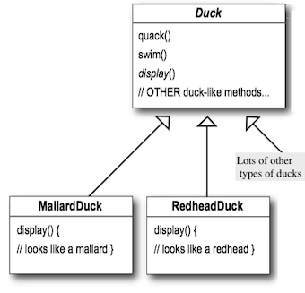
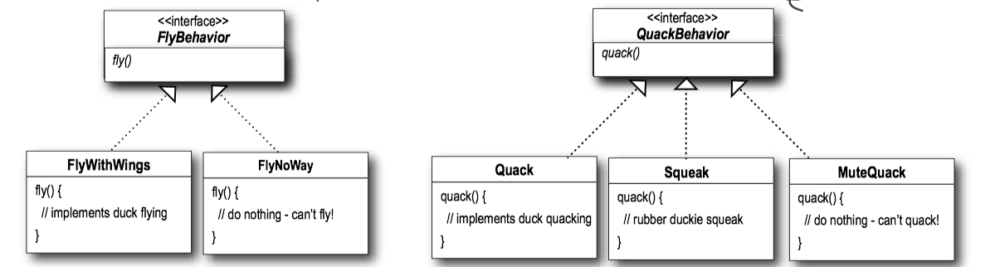
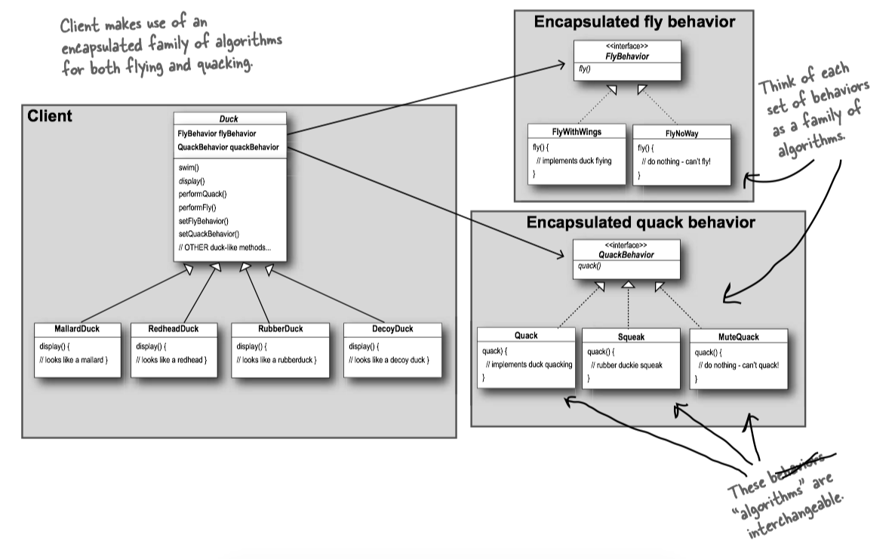
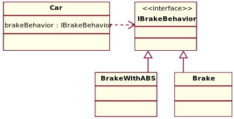
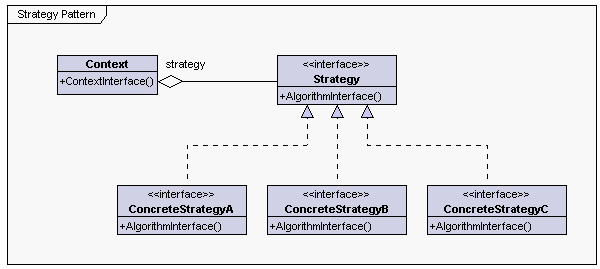

Head First Design Patterns 1 - Strategy Pattern¶
Instead of code reuse, with patterns you get experience reuse.
1 Problem statement¶
A

ONE OPTION: inheritance, add a
-> you may want to override the
ANOTHER OPTION: interface, make a
2 Strategy Pattern¶
The Strategy Pattern defines a family of algorithms, encapsulates each one, and makes them interchangeable. Strategy lets the algorithm vary independently from clients that use it.
策略模式定义了算法簇，分别封装起来，让他们之间可以相互替换。策略模式让算法的变化独立于使用算法的客户。
Design Principle: identify the aspects of your application that vary and separate them from what stays the same.
设计原则：找出应用中可能需要变化之处，把他们独立出来，不要和那些不需要变化的代码混在一起。
All patterns provide a way to let some part of a system vary independently of all other parts.
We know that
To separate these behaviors from the
So how are we going to design the set of classes that implement the fly and quack behaviors?
Design Principle: Program to an interface, not an implementation.
An Example: SimUDuck¶
We’ll use an interface to represent each behavior – for instance,

With this design, other types of objects can reuse our fly and quack behaviors because these behaviors are no longer hidden away in our
And we can add new behaviors without modifying any of our existing behavior classes or touching any of the Duck classes that use flying behaviors.
public abstract class Duck { FlyBehavior flyBehavior; QuackBehavior quackBehavior; public Duck() { } public void setFlyBehavior(FlyBehavior fb) { flyBehavior = fb; } public void setQuackBehavior(QuackBehavior qb) { quackBehavior = qb; } abstract void display(); public void performFly() { flyBehavior.fly(); } public void performQuack() { quackBehavior.quack(); } public void swim() { System.out.println("All ducks float, even decoys!"); } }
public interface FlyBehavior { public void fly(); } public class FlyNoWay implements FlyBehavior { public void fly { System.out.println("I can't fly"); } } public class FlyWithWings implements FlyBehavior { public void fly { System.out.println("I'm flying!!"); } }
public interface QuackBehavior { public void quack(); } public class Quack implements QuackBehavior { public void quack() { System.out.println("Quack"); } } public class MuteQuack implements QuackBehavior { public void quack() { System.out.println("<< Silence >>"); } } public class Squeak implements QuackBehavior { public void quack() { System.out.println("Squeak"); } }
public class MallardDuck extends Duck { public MallardDuck() { quackBehavior = new Quack(); flyBehavior = new FlyWithWings(); } public void display() { System.out.println("I'm a real Mallard duck"); } }
public class MiniDuckSimulator { public static void main(String[] args) { MallardDuck mallard = new MallardDuck(); RubberDuck rubberDuckie = new RubberDuck(); DecoyDuck decoy = new DecoyDuck(); Duck model = new ModelDuck(); mallard.performQuack(); rubberDuckie.performQuack(); decoy.performQuack(); model.performFly(); model.setFlyBehavior(new FlyRocketPowered()); model.performFly(); } }
The big picture¶
The Big Picture on encapsulated behaviors:

HAS-A can be better than IS-A¶
HAS-A can be better than IS-A: The HAS-A relationship is an interesting one: each duck has a
When you put two classes together like this you’re using composition . Instead of inheriting their behavior, the ducks get their behavior by being composed with the right behavior object.
Design Principle: Favor composition over inheritance.
An Example: GameCar¶

/* Client that can use the algorithms above interchangeably */ public abstract class Car { protected IBrakeBehavior brakeBehavior; public void applyBrake() { brakeBehavior.brake(); } public void setBrakeBehavior(final IBrakeBehavior brakeType) { this.brakeBehavior = brakeType; } } /* Client 1 uses one algorithm (Brake) in the constructor */ public class Sedan extends Car { public Sedan() { this.brakeBehavior = new Brake(); } } /* Client 2 uses another algorithm (BrakeWithABS) in the constructor */ public class SUV extends Car { public SUV() { this.brakeBehavior = new BrakeWithABS(); } }
/* Encapsulated family of Algorithms * Interface and its implementations */ public interface IBrakeBehavior { public void brake(); } public class BrakeWithABS implements IBrakeBehavior { public void brake() { System.out.println("Brake with ABS applied"); } } public class Brake implements IBrakeBehavior { public void brake() { System.out.println("Simple Brake applied"); } }
/* Using the Car example */ public class CarExample { public static void main(final String[] arguments) { Car sedanCar = new Sedan(); sedanCar.applyBrake(); // This will invoke class "Brake" Car suvCar = new SUV(); suvCar.applyBrake(); // This will invoke class "BrakeWithABS" // set brake behavior dynamically suvCar.setBrakeBehavior( new Brake() ); suvCar.applyBrake(); // This will invoke class "Brake" } }
UML¶
